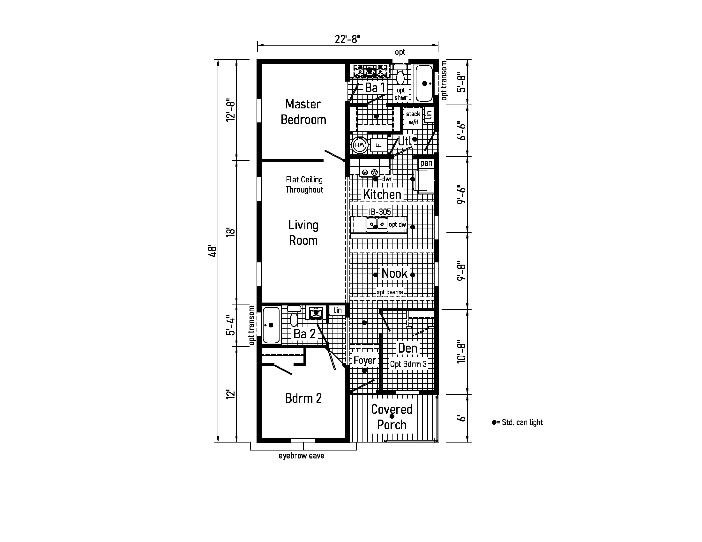

Belden 15440 / Bungalow 12 24482A
Double Wide Modular or Manufactured Home built by Cavco / Cavco Clarion and offered through Belden Homes.

Plain-English summary
Belden 15440 is the Bungalow 12 24482A from Cavco Clarion's Astro Creations series. It is a 2-bedroom, 2-bath double wide plan with 1,022 sq. ft. and an exact floor plan dimension of 22'-8" x 48'. Belden can help compare this model against the rest of the current six-model lineup and talk through site prep, delivery, and setup needs.
Current status: Call for current availability.
Source note: Specs and media were scraped from the Cavco listing provided for Belden model 15440.
Facts scraped from Cavco
What the listing includes
- Floor plan dimensions, beds, baths, square footage, series, and building method verified from the Cavco listing.
- Exact colors, decor packages, pricing, and lot availability should be confirmed directly with Belden.
Available listing photos


Showing 12 of 28 available Cavco photos. Use the Cavco source link for the full gallery.
Want this plan priced and compared?
Call Belden with the Belden model number and Cavco model name. They can confirm availability, options, delivery timing, and setup scope.